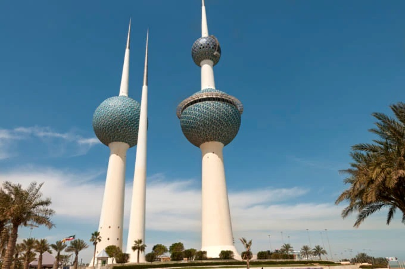
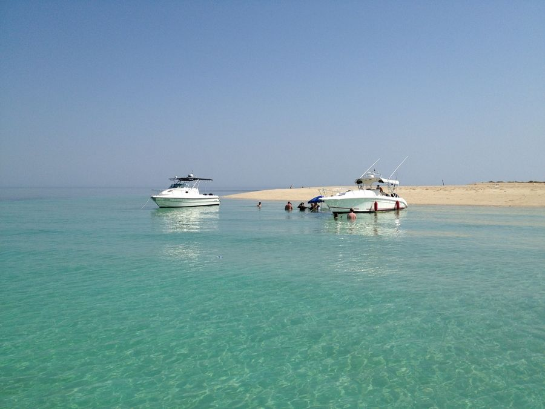
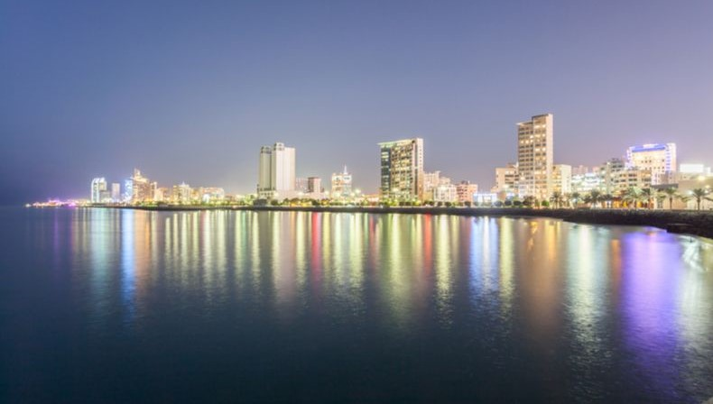
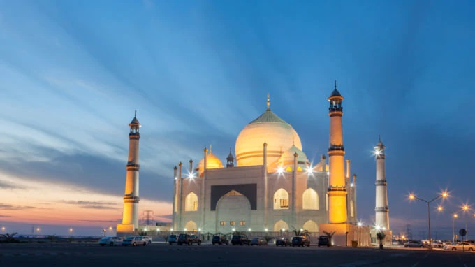
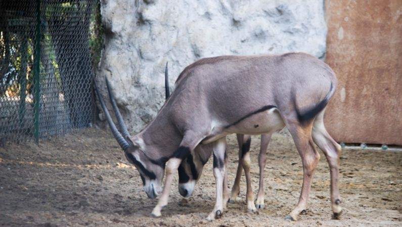
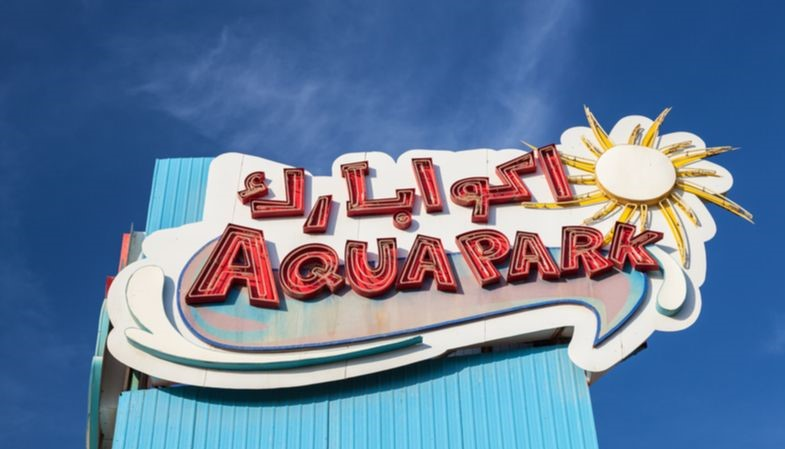

A Country in Middle East Asia Famous for Hot Sand Dunes and Stunning Cityscape
Kuwait is an Arabian country located on the on the Persian Gulf. This Arabian gem is a mixture of Western liberalism and traditional Islamic culture. However, religion is its integral part of daily life.
Kuwait holds some very strict rules and travelers need to be wary of them so as to not offend the locals. These rules may also involve dress code for the women travelers.
The best season to travel is during spring when the weather is cool and pleasant. Other numerous attractions such as excellent museums, modern shopping complexes, and marinas can be found in Kuwait. These are some of the common travel spots that are frequently visited.
The inclusion of the capital city of any country in its must-visit places is rather obvious, but don’t underestimate how much this diverse city has in store for you. Starting from the slender Kuwait Towers, ending with the massive Grand Mosque of Kuwait & covering everything in between, the largest city has plenty of attractions. Geographically in the heart of Kuwait, situated on the shore of Kuwait Bay, Kuwait City truly encapsulates the essence of the gulf nation. Markets, mosques, cafés, restaurants, parks, museums—with so much going on, it is a no-brainer that Kuwait City made it to our suggested Kuwait tourist places list.
How to Reach
By air: Kuwait International Airport, 16 kilometers from the capital, is your gateway to the gulf nation. Jazeera & Kuwait Airways take off & land all the time, connecting to major cities like New York, London, Paris, Rome & others.
By road: If you are in Saudi Arabia, you may like to board a bus by the Kuwait Public Transport Company from Riyadh. Driving through Al Salmy is another option.
By train: Taking a train to Kuwait City is an option if you are in a nearby city.
Best Time to Visit: November to April
Nearest Airport: Kuwait International Airport
Places To Stay: Four Seasons Hotel Kuwait at Burj Alshaya, Al Kout Beach Hotel, Marina Hotel, Levels Tower Hotel Apartments, Swiss-Belboutique Bneid Al Gar Kuwait
Shopping Markets: Souq Al Kuwait, Souq Sharq, Al-Salam Mall
Kuwait Towers

Another of those Kuwait city attractions to visit, Kuwait Towers are a group of three towers that stand at a staggering height and are one of the major attractions in Kuwait. For visitors coming to see the towers, the main tower stands at an approximate height of 187 meters while the second tower stands at a height of 147 meters. Besides, speaking about the third one, the third tower features equipment that is there to illuminate the two towers. As defined by history and the architects who built it, Kuwait Towers are a symbol of humanity and technology.
Location: Arabian Gulf St, Kuwait City, Kuwait
Timings: The towers are open all week from 8 AM to 11 PM
Entry Fee: KD3 per person, KD1. 5 for children between 4-9 years old
Kubbar Island

Also spelled ‘Kobar’, this island is located about 30 kilometers from the southern tip of Kuwait, in Persian Gulf. Referred to as the Ibiza of Kuwait by travelers, the tiny island is surrounded by crystal clear waters & offers sandy beaches for hip parties. While you make a trip to the gulf country, it only makes sense to include it in your Kuwait places to visit. This tiny island, with its major BBQs awaits!
How to Reach
To reach you would require a speed boat, though some groups can also arrange a yacht. Don’t forget to bring a day’s worth of food & water!
Best Time to Visit: November
Nearest Airport: Kuwait International Airport
Salmiya

A heaven for shopaholics, Salmiya provides unending opportunities to shop till you drop, with plenty of malls & arcades. From Kuwaiti sweets to handcrafted ornaments, traditional teapots to rugs of sheep wool, if you are looking for presents for friends, the options are aplenty. This gem city is filled with Kuwait attractions like Al Fozan, or a unique pyramid-shaped mosque, & the biggest aquarium of the Middle East
How to Reach
By air: As always, the nearest airport is Kuwait International Airport, 16 kilometers from Salmiya. You could catch a taxi.
By road: We suggest keeping Salmiya as your second stop in Kuwait, succeeding Kuwait City. This is because the distance between the two cities is only 10 kilometers.
Best Time to Visit: September to November
Nearest Airport: Kuwait International Airport
Places To Stay: Marina Hotel, Levels Tower Hotel Apartments, The 58 Hotel Apartments, Swiss-Belboutique Bneid Al Gar Kuwait, Four Seasons Hotel at Burj Alshaya
Shopping Markets: Marina Mall, Boulevard Mall, Al Salam Mall
Grand Mosque

One of the finest tourist places in Kuwait, the Grand Mosque attracts travelers from all around the world. As the natives put it, it is one of the many treasures that Kuwait possesses. While officially being the biggest mosque in the country, the Grand Mosque is renowned for having big celebrations, and other religious events here. Covering about 46000 square meters, the mosque is a fine example of the Islamic architectural style and attracts visitors pretty much due to its Persian structural design. Interestingly, Muslims from all around the world gather at the Grand Mosque during the period of Ramadan.
Location: 25, Kuwait City, Kuwait
Timings: The Grand Mosque is open for full 24 hours all week
Entry Fee: N/A
Built In: 1979-1986
Kuwait Zoo

Another of those places to see in Kuwait, Kuwait Zoo is a fine place for kids to have the best possible time with parents. With over 1606 animals that include dangerous species as well, this is a place that ensures it all. In fact, there are a number of rare birds at the Kuwait Zoo too which have been categorized into five different units and each category has a staggering 12 different species.
Interestingly, as the authorities put it themselves, the purpose of the park is to educate children about the different animals and how they are or should be treated. Simply visit the zoo and spend the day meeting rare animals in a safe environment.
Location: Airport Rd, Kuwait
Timings: Monday to Saturday from 8 AM to 7 PM (Closed on Sunday)
Entry Fee: 500 fils
Aqua Park

Located on the Arab Gulf Street, the Aqua Park is one of the best places to visit in the Middle East and the first water park in the Gulf with a total area of more than 60,000 square meters. One can find the park just adjacent to Kuwait Towers and is a perfect place to spend a family fun day in Kuwait. With top of the line water activities, scuba diving, volleyball court, swimming for adults and so much more, this is a perfect place to enjoy your day in Kuwait and to get some respite from the heat.
Interestingly, the park features separate mosques for men and women while one can also savor the best of delicacies at the restaurants nearby.
Location: Gulf Road
Timings: Travelers are advised to confirm the timings of the park with the concerned authorities